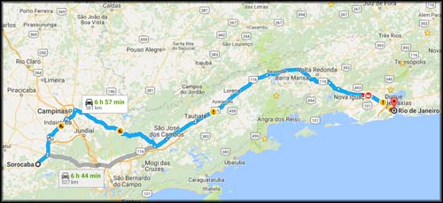

Domingo, meu plano era chegar no Rio ainda antes de escurecer. Arrumei as malas, amarrei na moto, me despedi da galera de Sorocaba, e pé na estrada, digo, rodas na estrada.
Não quis passar por São Paulo, e segui em direção a Campinas. Estrada boa, mas eu ainda estava bem cansado, e agora de ressaca pela farra de sábado. Já chegando em Campinas, parei para abastecer dentro da cidade (Km 16987) às 13:52, bebi um “Redbull”. Saindo do posto parei na calçada para confirmar no GPS do celular se eu estava na direção certa. Estava. Segui viagem. Chegando na Rodovia D. Pedro I, o sol começou a incomodar, e me deu um estalo. Meus óculos escuros!
Putz, eu estava de óculos escuros, quando parei para ver o GPS o retirei e coloquei sobre o banco do carona, e acabei esquecendo lá. Alguém provavelmente já pegou no chão, perdi. Não me dei por vencido. Voltei uns 10 Km até onde eu sabia que tinha perdido os óculos. Passei no posto de gasolina, perguntei aos frentistas, nada. Fui pilotando devagar, procurando na calçada e na beira da rua... e acabei achando o coitado! Pelo ao menos uma parte dele. Os carros e ônibus já haviam triturado meus óculos escuros que eu gostava tanto, que merda. Fiquei muito chateado, e segui meu rumo, puto da vida com minha distração. Sou muito cuidadoso com minhas coisas, não costumo perder nem quebrar nada, mas o cansaço da viagem me venceu.
Voltei até a D. Pedro, segui pagando o primeiro pedágio (R$ 3,30), até que cheguei em Morro Azul e resolvi parar para comer, já era por volta de 15:00.
Entrei na lanchonete e vi uma bancada com buffet. Eu pensava em comer um sanduíche, mas achei melhor comer algo com mais nutrientes, ainda que pouco pois estava sem apetite e a comida em si não tinha lá uma aparência legal. Fiz um prato bem pequeno, com um pedacinho de lasanha e uns pedaços de linguiça que já estavam ressecados pelo tempo. Procurei a balança para pesar o prato, não achei, fui perguntar. Era buffet livre. Paga R$ 26,00 e come à vontade. Putz! Agora já era, me dei mal. Não estava com fome, e mesmo se estivesse não iria comer muito daquela comida de aparência velha e sem graça. Comi a lasanha sem gosto, bebi um refrigerante para enganar, e fui pagar conta, muito puto.
[caption id="attachment_721" align="aligncenter" width="500"] De Sorocaba para Rio de Janeiro, última etapa da viagem.[/caption]
Segui viagem, pedágio em Atibaia (R$ 2,70), pedágio em Igaratá (R$ 3,40), passei pra rodovia Carvalho Pinto, pedágio em São José (R$ 1,25), pedágio em Caçapava (R$ 1,00). Desci para a Dutra, parei para abastecer em Pindamonhangaba/SP (Km 17203) às 17:25.
Pedágio em Moreira Cesar (R$ 5,00), pedágio em Itatiaia (R$ 5,00), e seguindo. Parei para abastecer na altura de Piraí/RJ (Km 17377) já era umas 21:20. Iria pegar a Serra das Araras de noite, com muitos caminhões, sempre arriscado. Mas o tempo estava bom, sem pista molhada.
Desci toda a serra, e sai da Dutra em Seropédica. Mais um pedágio (R$ 5,00), e agora faltava pouco para acabar a minha mais longa trip. Passei por Seropédica, estradinha horrível, quebra-molas às dezenas, radares de velocidade, carros e caminhões velhos, lentos e com lanternas queimadas... aquele caos, cansativo. Passei por Campo Grande, trânsito dos infernos, Kombis de lotada. Guaratiba, e pouco depois estava em casa. Quase 23:00.
Cheguei exausto, mas feliz. Subi para o apartamento, nem descarreguei a moto. Abri uma cerveja para comemorar essa bem sucedida viagem, a minha mais longa trip de moto até então. Tomei um banho rápido para acordar, e lembrei que uns amigos estavam na casa da minha irmã bebendo umas cervejas e jogando papo fora. Descansar que nada, faço isso amanhã, arranquei as bagagens da moto, joguei em qualquer lugar, e fui para a festa!
Fim!
---------- Comentários são bem vindos, inclusive dúvidas que eu saiba responder. Por questão de organização, comentários sobre a viagem ao Uruguai estarão concentrados no primeiro artigo que pode ser acessado aqui: Viagem de Moto do Rio ao Uruguai. Obrigado pela visita!